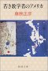

28 27 26 25 | 24 23 22 21
20 19 18 | 17 16 15 14 13
12 11 | 10 9 8 7 6 5 4 | 3 2 1
28-6 (donterdag)
- detlef と議論
-
正式な office に引越し完了
- 前
より広い所で(とりあえず当座)一人
- computer, telephone はまだ使えず
-
午後には船便の内の仕事のもの(本、ノート、計 9
箱)も車で運ぶ
- 後記(6-8-2001): 引越したオフィスの写真
27-6 (woensdag)
- 日曜にやるらしい concert
の会場設営を、既にはじめている
-
[phys]ALF project
-
粒子 simulation
- 半径変化考察の道具作り、 p-a file
を追加、 alf.c (Rev 2.8)
26-6 (dinsdag)
-
seminor: "
Presentation of experimental projects - part 1 "
-
[phys]ALF project
-
粒子 simulation
-
pos.200.KM_2d:
-
pos.200.+2.2d:
- 目的は可能性 2) の検証、
精度チェック抜きでとりあえず、
計算中
-
[phys]論文2000/4-1 =
JFM 論文
-
最終改訂、開始
- british の spell check をかける、 Rev
3.2
- howard stone の改訂、打込中…
25-6 (maandag)
- 今日は天気がよい
-
うっ、また(なんだな)セミナーをすっぽかしてしまった…
不良 post-doc だ
- 「今日だよ」の一言が、coffee time
の時にあってもいいのになぁ
(時間だけでなく曜日も変更されているとは、気が付いてなかった)
- 最近、よく「抜けて」いる
-
[phys]ALF project
-
粒子 simulation
-
mono + primary + 近似 secondary モデル
-
解析法を考える
- 目的はパターン形成、 極座標表示 +
2D 化、 二つ script 書く
-
結果
-
pos.200.KM: primary + 多体抵抗(poly)
- 明確な pattern
は出来ない
- 可能性: 1) N 不足、 2)
secondary、 3) polydispersity
-
pos.200.KM_2d: 1) を睨み、monolayer
化
24-6 (zondag)
-
ここの日記のバナー
 を書いて見る
を書いて見る
-
RSS
で付けるイメージのため。ついでにページの頭にも付けておく
-
最初は draw 系で書こうとしたが、結局 gimp でゴリゴリ
- " Draw in Ink " (Tools -> Paint Tools ->
Ink, binding は " K ") が、結構よい
- 縁に影を付けるのは Script-fu -> Decor
-> Add Bevel
23-6 (zaterdag)
22-6 (vrijdag)
-
市役所から「免許証のことで来い」との知らせが(また)来ていたので、
今日やっと行く
- 今週あたまくらいだったかな、来たのは。 seminar
などあったので先送りしていた
-
行くと、懸念どおり正式な滞在許可証(カード)がないと申請できないらしい
(cf.1-6)
-
[phys]ALF project
-
粒子 simulation
-
primary table 改訂、その４
- Keller-Miksis、 新 table
のチェック (with U. Parlitz et al, again
(cf.11-6))、
再再現
-
mono + primary + 近似 secondary
モデル、debug
- bug 一つ潰す、 まだ止まる、 eps
下げても効果なし、
間隔チェック…
- 現状で登録 (Rev 2.5)
-
最近の週末の遊び、RSS
21-6 (donterdag)
-
仮の
office を去り、正式な office
への引越しが、遂に 28 日との知らせ
-
図書館で本を借りて来る
- E.W.Hobson " The theory of spherical and ellipsoidal
harmonics"
- Rayleigh " The theory of sound "
- BEM 系の本、など
-
[phys]ALF project
-
粒子 simulation
-
primary table 改訂、その３
- Gilmore、これも pending
- Keller-Miksis、 逃げてもダメ、
target に限定 (どうせ mono
で(当座)やってるし)、
計算中
20-6 (woensdag)
-
[phys]ALF project
-
粒子 simulation
-
primary table 改訂、その２
- Rayleigh-Plesset、 一点で stuck,
pending (どうせ、使いたくないし)
-
Keller-Miksis、 やはり壁が…
策を尽くすがダメ(chaotic?)
- おかげで、プログラム debug and
改訂 (Rev 1.11)
- 壁の向こうをあきらめ計算中
- Gilmore、
初手から時間がかかり過ぎ…
-
seminar: " Hydrodynamic interaction of particles in
Stokes flow " (私)
-
最悪だった
- 内容は自分にとっては新しい事ではなかった
(からか、甘く見ていた所はある…)が、
英語での発表の準備不足、これに尽きる
- 定式化の部分は trivial
なことを冗長に述べ、
数値計算の部分は(詳細を説明はできるが)簡潔な説明が出来ない
- 前者は私自身の割り切りが出来てない、
後者は本当の意味での理解が出来ていない、のかな
-
何か発表内容の原稿を全部用意して、それを暗記するなんてした事ないが、
それくらいしないとダメかなぁ
-
納戸の船便の荷物の山から本を抜きだして読む
-
リハビリに 「
フェルマーの最終定理」を再読。 (cf.6-8-2000)

- と、昔の日記を見てたら 「 ガチンコ」
への言及に目が止まる。
どうも藤野は落ちてしまったようだなぁ
-
前に古本屋で手に入れていた、
多賀さんおすすめ(パサデナに居る時の話)の「
若き数学者のアメリカ 」(藤原正彦)も手に取る

- が、随分と攻撃的な人だなぁと感じる。
リハビリにはならず…
-
少なくともセミナーの準備は大切だ、という(当り前の)ことは分かった
19-6 (dinsdag)
-
船便、お昼に届く
- 我が部屋は日本で言う所の 4
階(エレベータは部屋とは半階ずれていて、
うちに使えるのは 1~2 階の間から 3~4
階の間まで…)だが、
運送屋は「仕事は玄関までだ」と…
- 汗だくになって、重たい段ボール 28
箱を、とりあえず納戸(みたいな所)に運ぶ
- 私の仕事荷物の家での荷ほどきは禁止されたので、
新しい office に移るまでおあずけだな…
-
ぬけぬけと、平気な顔をして、 例の荷物 が、今日ようやく届いた
- 通関に 55,30 f とられた
- これまで何をしてたのか?
-
全然悪びれないところが、オランダ人なのかなぁ…
-
何だかんだで、とても明日のセミナーの準備が出来る状況にない
-
これまでの話をすればいいので、最低限はクリアしているのだが、
ちょっと頑張りたかった…
まだ、できる、けど
-
ということで、1.00 am に何とか完了
-
[phys]ALF project …トラペ書きの background で
-
粒子 simulation
-
primary table 改訂
- 今の計算には judith の表を使用
(問題は、水+空気ではないなど)
- 水+空気で計算、
非収束がある、 max_loop 増、
多重周期を考慮
18-6 (maandag)
-
[phys]ALF project
-
粒子 simulation
-
mono で primary のみモデル、その４
-
debug and tuning その３
- チェックルーチン追加
- BUG 発見(2.2
の修正は間違い、self
の因子の間違い)、 N=2
で問題なし (Rev 2.2)
- 平均粒径が効くことを認識(even in
mono)、 table 作り直し
-
mono + primary + 近似 secondary モデル
- table の整備、
項目追加、ついでに定義も修正
- 実装、改訂 など、 table
を再計算中！
- 未チェック
- 例の荷物、
結局来ないじゃないか
-
先日TVの音楽番組(MTVじゃないそれ系の)で、
変な(らしくない) promotion video を見た
17-6 (zondag)
- 自宅にて
-
[phys]ALF project
-
粒子 simulation
-
mono で primary のみモデル、その３
- tuning その２: 初期 SC
追加、 debug
一つ(速度の計算)、
配列から pointer
に(気持ちの問題)
- まだ、らしくない (Rev 2.2)
-
mono + primary + 近似 secondary モデル
16-6 (zaterdag)
-
友人達と魚焼きパーティーをする
- ために、 ドイツの Gronau
へ買物に出かける
- その後 Enschede の market
でも買物
-
夕食は、はらこ飯(うまかった)、アジのフライ。
アジはちょっと身のしまりがなかった、との評
-
その友人に教えてもらった Prokudin-Gorskii
という写真家のとった 1900年初頭のカラー写真
15-6 (vrijdag)
-
船便、配達の日取りが決まる
- 18-6 にロッテルダム発、 19-6
にこちらに着、らしい
- 仕事の書類、本などが半分、家財が半分。
これらが来れば、引越しも終ったことになる
-
もう一つの荷物は…
- 昨日連絡を入れるように言ったが来ず、
今日電話すると担当者は会議中、
夕方ようやく担当者から電話がある
-
まあ、こちらが頭に来ている事は分かってくれている様子で、
月曜日に再々度トライすることで、
連絡先などを再々確認。 本当に届きますか
-
[phys]論文2000/4-1 = JFM 論文
- howard stone の赤入れ原稿届く
-
予想以上にメタメタにされているなぁ
- 結構手間どるかも…
-
[phys]ALF project
-
粒子 simulation
-
mono で primary のみモデル、その２
- tuning: 1 体近似用 flag 導入(for
check)、 B.C. チェック追加、
速度計算に trick 追加
- 求める挙動を示さない…
14-6 (donterdag)
-
[phys]ALF project
-
粒子 simulation (16-5-2001
の段階にやっと戻って来た)
-
primary Bjerknes の実装
- polint() を試みる、端で不安定、断念、
素朴に線形、書下す、test 終了
- 組込み、debug 終了
- 立方容器 routine 準備、check
終了
-
mono で primary のみモデル
- 本物を使う、サイズの convention
修正、 時間積分を adaptive に、
hydro を有次元に
- とりあえず動く、Rev 2.1
13-6 (woensdag)
-
紆余曲折の末、船便が税関を通過、Enschede
までの配送段階に入った
-
後で、「日本からオランダに船便で送った一事例」として、
一通りまとめる予定
- とりあえず、ここの業者に請求された金額は 633,45
f. こんなものか
- ちなみに、先日の買物は
未だに手元に配達されず…
こっちの配達システムってどうなっているのか
-
ander 船便
- あと、「PTT (こちらの郵便局)
から荷物 3 つ届いている」というので
受け取りに行ったら、 日本を出る直前 (18-4の辺)に広島から出した
船便(郵便局)だった。
すっかり忘れていた
-
料金
- 9,200 円(16.345 kg) 衣類と雑貨
- 7,100 円(10.620 kg) 衣類
- 5,650 円(7.995 kg) 衣類
-
[phys]ALF project
-
secondary Bjerknes force の table 化
- 実装その2、 bug 一つ潰す、
とりあえず動く (Rev 1.9)、
- テスト1) R.Mettin et al. PRE
56 (1997) 2924, Figure 4 を再現
12-6 (dinsdag)
-
seminar: " Emboli characterization using ultrasonic
harmonic scattering " (Peggy Palanchon)
- 血管中の気泡を、音波でどう detect
するのか、という話
-
脳の毛細血管に入ったりすると血流が止まってやばいらしい
- 振動数を変えて共鳴(高次の
harmonics)を見るらしい (conventional
な超音波の中を見る奴に比べて、それが新しいらしい)
- 縲桑eller model
の数値計算と比較すると…」とか聞くと、
(それって今自分がやってる(やらされている)ものだなってことで)
この世界(分野)ってものを実感する
-
[phys]ALF project
-
secondary Bjerknes force の table 化
- U. Parlitz et al. の B2 は一体近似、
先の結果で再現を確認
- 正しい secondary の table 化、
Keller-Miksis の連立、
圧力振幅も変り得る、 実装 (Rev 1.8)
-
「モデル」ってものにかんする議論
-
Comment from Dr. Hal Tasaki, 2001-06-11
-
この議論は対立項として「複雑系」があるようなので、
無闇な一般化は避けるべきだろうが、
「備忘録」的に(あるいは ウンコ的に)
-
私流のとらえ方
-
物理屋の研究(あるいは論文)を、以下の構造で考える時
-
物理的な考察(天才的なひらめき)で
model をつくる
- model から出てくる結果を議論
-
よきものと見なされる条件として、次が課せられる
(というのが、独断的なサマリー(or
危険な一般化))
- 単純なモデル
- non-trivial
な結果
-
だけど、私はむしろ二項対立ではなくて、
単に「やらせでない議論」という条件を意識したい
-
単純でなくてもいいし、洗練されていなくてもいい、
本当に non-trivial であれば
- つまり、私の方がレベル設定が低い
(多分、「二項対立」に含まれる、という意味)
- 2-7-2001記:
「やらせ」に対する拒否感は 13-12-2000, 25-9-2000
にも書いている
-
結局、そういうモデルを捻り出すのが一番大変なんだが
-
つまり、普通は論文には書かない(書けない)
hidden step 0 があって
-
泥臭い試行錯誤(あるいは集中した思考の後の深層心理の作用)により、
非自明な現象の物理を掴み出す
-
あるいは、(ある意味で同じことのように思うが)
回答を与えるべき非自明な問題を設定する
-
類似の記述
-
研究会、学会などでの informal
な話で面白いのは この hidden step 0
が聞けるから
-
硬派研究日記 (と、勝手に名付けるが)
も、
普段隠される試行錯誤が見れるから、面白い
(し、ある場合は励みにもなる)
- これは 8-6-2001の
「知の共有」の一つの具体的な形、なのかな
- そこでの generation
に関する記述も、
佐々日記、
早川日記
の硬派さが目立つので感じたのかも
-
まぁ、何事にも「対立」図式はある訳だが
-
この日記スタイルも、いろんな意味で、
いろんな物に対する、ANTI
によって成立しているとも言えるし
- 生産的な ANTI
であれればよいが
(そもそも、そんなものあるのか?)
- 2-7-2001記:
「硬派日記」に関する記述 24-1-2001.
-
最近、自分自身がこの「試行錯誤」を書けないのは、
試行錯誤していないからだ…
硬派度が落ちている
-
物理屋ってのは「よいモデルを捻り出してナンボ」な気がするが、
その意味の物理屋のセンスは(今の私には)無いなぁ
-
「よいモデルを捻り出す」という重圧に敗けて、
(安直に)一番下まで降りてチマチマやっている訳だ…
-
本質を掴みとるために必要な「深み」を一生懸命作ろうとしている、
と自分では思っているのだが(ながぁ〜いこと)
-
「モデルを作る」=「やらせ」と直観的に感じている気もするが、
これは言い訳か?
- Navier-Stokes
だってしょせん「モデル」でしょ、
という典型的な statement
は本質的ではない気がする
11-6 (maandag)
- 昼食時の大学のガイダンスなるものに行く
-
[phys]ALF project
-
Rayleigh-Plesset equation
-
数値計算
- table 作りその３、終了 (for
primary)
- U. Parlitz et al と比較、再現
-
detlef と議論
- secondary も数日で table 化出来る
- 今週中に primary の monodisperse
で、何か結果を出す
- 周期系への話(JFM
の続き)もやってもいいのだぞ、と言われても…
- 先日の買物、未だに手元に配達されず…
10-6 (zondag)
-
友人と Zwolle
に買物に行く
-
こちらは基本的に(結構厳格に)日曜は店が閉まるが、
月に一度(だったかな)「買物日曜日(オランダ語は、忘れた…)」と言う日があって
幾つかの店が開く
- 今日がその日なので、友人が「Zwolle
に行こう」と言う事になり、出かける
-
夕方から飲みに
-
誕生日プレゼントとして昼間にもらったグラスを持って行く時に割ってしまう…
(と話したら、新しいのをくれた。うれしい)
9-6 (zaterdag)
-
タンザニアの友人を夕食に招待
-
いろいろな所で、いろいろな形で、頑張っている人達について考えた
8-6 (vrijdag)
-
今日の coffee time にも cake があった
- また誰か誕生日か、と思ったら 先日のセミナーで喋った
Veronque Roig が
今日で帰るので、ということ
-
後で、先日のセミナーについて少し(たっぷり)しゃべる
-
Kelvin-Helmholtz
では(いまのところ)議論できないらしい
-
名前は「ロッチ」と読むらしい(「フランス人はロワッグと読む」と言ってた)
-
1-5-2000に書いた
高山義浩の連載「アジアスケッチ」が 本
になったらしい (ISBN:4-938651-35-1,
bk1)
- 何で広中平祐が解説? と思ったら、
著者の高山さんが今山口大学にいて、
山口大学の学長が広中平祐というつながり、なのかな?
-
隣の芝 -- 「 非平衡系の新局面」
-- が終ったようだ
-
佐々さん ６／２(土) -
６／６(水)
『「(世話人として)もっと制御せよ」という批判を複数の人からもらった』
って、何か不可解
- そもそも自由な討論を指向したものだとばかり
思っていた
-
まぁ実際の現場を見てないので、何とも言えないのだけど
-
(後記: 注*)のコメントより)
実際には実際上の問題が生じる訳で、
当り前だが「そんな簡単な話」ではなかったらしい
- こういう話(管理 vs
自由)を聞くと、いつも Open Source
の仕組み ( Eric Raymond
の 「伽藍とバザール」)
を思い出す
- そこでは、Open Source は基本的に
academic な仕組みで理解できる
って話だったと思う
-
当の academia
で「自由」でかつ「生産的」な環境を作るのは、
難しいのかなぁ…
- 鍵は「評価」なのか?
それが『上からの介入』(佐々)への代替案か?
-
generation について少し考える
- [phys]問い
佐々さん、早川さん(らの世代)は私が
M1
のころから今と変わらない(気がする)。
私(達)は(既にその当時の彼らの年になりつつある
*)訳だが)
決してその当時の彼らのようにはない。
この状況は何だろうか?
-
[考えられる答え]
-
私(達の世代)が単に「弱」過ぎる
-
私(達の世代)は、「知」を共有することに積極的ではない
- 気持をそこまで行く余裕の無い人や、
そういう事をそもそもする気がない人や
- いずれにせよ、小物ってことだな
-
個人の問題を棚上げして世代の問題にした時点で、
何ら現実的な考えではなくなっている、な
-
*) 山の generation
(早川さん) からコメント(13-6-2001
オランダ時間)
-
私が M1 のときはまだ佐々さん 28、
早川さん 30 だそうだ。
私はとっくに過ぎている (残念な事に先日 33
になってしまった)
-
generation 間の比較という側面の他に、
私(達)の、悪い意味での個人主義的な傾向を感じることが、
グダグダ書いてる一因ではある
- 考えても仕方の無いことを考えるのは、
現実逃避の典型的な行動である。
-
[phys]ALF project
-
Rayleigh-Plesset equation
-
数値計算
- table 作りその２、 無限 loop
よけ追加、再計算中
7-6 (donterdag)
-
Vrijstellingsvergunning vor de invoer van verhuisgoederen
- 英語で言うと exemption for household goods
、 日常品の免税申告の書類。
日本から送った船便に課税されないためのに必要な書類
-
作業手順
- 数日前にRotterdam の船会社から、
地元の custom (dutch では
Douane、税関)
でとってから送ってくれ、と知らせが来た
- 秘書さんに Enschede の douane
の場所を探してもらい、 application form (dutch
では aanvraag) を fax してもらい、
記入した
-
それを douane の office
まで持って行った
- Enschede は Transport Centrum
という場所
(大学の正面の道をまっすぐ行って、線路を潜って、運河を越えてすぐを右、
その左手に Douane と出ている)
- application form と、packing list,
大学での雇用契約書と 住民登録の証明書、
他に(これは必要かどうかは分からないが、とりあえず持参した)
パスポートの copy と船会社からの手紙の
copy も添えて渡した
-
すると、10分もたたないで「出来たよ」と書類
(2枚構成の証明書と packing list
を閉じたもの)をくれた
- 船会社にその書類を郵送する
- さて、いつになったら届くのやら
-
[phys]ALF project
-
Rayleigh-Plesset equation
-
数値計算
- 実践的、table 作り、 program
準備、 前の比較とのチェック中
6-6 (woensdag)
-
誕生日ケーキを
coffee time に持って行く
- すると、何か妙に人が多かった (昨日は7, 8
人だったのが、今日は 20 人はいた…)
- 秘書の marianne
もケーキを持って来た(4日が誕生日、と言ってた)ので、
幸いケーキが無い人は出なかった
- 疲れた
- ←38 歳の頃
- 久しぶりに StarTrek を見る
- めずらしく夜テレビをつけて、そのチャンネル
(BBC, だから Dutch の字幕はなし)でやってた
- DS9 だ。dax
が変わってた(というか、dax は dax
だが、宿主が変わった、
というのかな)。
- 変に結論を付けず、ぷいっと終るところが StarTrek
の話の好きなところだな
- その後チャンネルを変えていたら、ふと古い映画が目に止まる
- 古めかしいホテル、熊、サイドカーと来て、
もしやと思ったら案の定、 悪名高い "The Hotel New Humpshire" だった ('84の映画か)
- と言っても、2000年の日めくり(爆笑新聞--かおが懸賞で当てたもの)
で太田光が書いていたものしか知らないが
- 実際、これは
本を読んだ人が見れるものでは無い、と思った。
(逆は、あるのかなぁ……判断不能)
- 話が飛びすぎ。あの話を全部入れる所に無理がある
(それも同じ cast で)
- 話を comedy にしすぎ。
内容の暗さに比べて圧倒的な positive thinking
がポイントだとは思うが、
何か違う方向に行ってる気がした
- casting にはいろいろ疑問を感じる
(まぁこれは本を先に読んでいる場合の常だが…)
- john (これが rob lowe か)
がかっこよすぎ。 susie (nastassja kinski
だったのか !) も
- 逆に franny は jodie foster
よりもうちょっと繊細さをイメージしてたが…
- salingerのと、ちょっとごっちゃになってるかも
- 役者は結構でてるなぁ
- と言いつつ、結局最後まで見てしまった。
しかし(口直しに)もう一度読みたくなった。今度は英語で読むか
5-6 (dinsdag)
-
1月5日応募の
昨年度第23戦(通算50戦目)のダメ、今ごろ届く
- 1月31日
以来 全く出してない
(今の所。モードを切替えた)
- しかしまだ一つ、結果
が来ていない。「4月1日着任」とあるのだがなぁ…
- まとめ: 昨年度の応募総数 26
で、全滅
(一つ(post-doc)は結果が来る前に取り下げ、一つ(post-doc)は断った)
-
←
10/22/2003
-
[phys]ALF project
-
Rayleigh-Plesset equation
-
数値計算
- program 整理、Rev 1.6
- チェック、 Rmax、
定量的にはあってないかも…
-
seminar: " Experimental study of the turbulence in
bubbly flows at high void fraction " (Veronique Roig)
- wire を使った bubble
のある乱流の速度場の測定の話と、 流体と
bubble phase の鉛直 shear layer の interface
の不安定性の話 (どちらも実験)
- judith の supervisor と言ってた
4-6 (maandag)
- 休日、自宅にいる
-
誕生日ケーキの試作
-
こちらでは誕生日の人がケーキをふるまう習慣があるらしいので、その準備
- 型が無くて作るのに一苦労
(したが分量が少なくて実質いらなかった…かも)
- 結構よい出来 (私は補助のみ)
- 友人が ロシア土産を持って来てくれる
-
[phys]ALF project
-
Rayleigh-Plesset equation
-
数値計算、claus の Gilmore を実装
(Rev 1.5)
3-6 (zondag)
-
前から気になっていた RSS を試みる
-
RSS とは、 例えば
-
この日記 (HTML) から RSS を作る
script を perl ででっちあげる
- XML
で日記を書いていれば、もっと楽に作れるのだろう
- 日本語については、とりあえず RSS は
UTF-8 で、 HTML は JIS
で、ということに
- 成果は、とりあえず これ(その場で取りに行くので、時間が掛かる)
と
これ(my_portal)
-
RSS からヘッドラインの HTML を作る script
は、 ほとんど次と同じ (Jcode で jis
に変換しただけ)
-
my_portal は、 ほとんど次と同じ
-
その他
-
RSS の置き場所を見付けるのが大変
-
こことかにそれぞれの headline
が載れば、便利だなぁ
-
友人に誘われ
Haaksbergen に連れて行ってもらう
-
ちょうど、そこの鉄道(SLが走っている)の
100 周年記念のまつりをやっていた
- どうも昔は amsterdam 経由で den haag
までつながっていたらしい
- 今 SL が走っているのは隣街の Boekelo
まで (所用時間約 30 分、往復で一人
12,50 f)
- SL
以外にも蒸気機関車(道路を走ったりする奴とか)もあった。面白い
-
木靴を作ってるおじさんの話を聞く(半分くらいしか分からなかった…)
- しかし今日はすごく寒かった(風も強い)
2-6 (zaterdag)
-
今週末は連休(月曜が休日)なので、餓死しないように買いだしに出る
- 雨なので町の market はやめて、車で
shopping mall に行く
1-6 (vrijdag)
-
市役所に免許証の申請
- 22/5/2001の続き
-
先日
届いた CBR から返送されたカードを持って
city hall の窓口に行く
-
日本の免許証とその翻訳(大使館に依頼したもの)を添える
-
窓口の人が緑の紙を裏から取って来て、書き込んでくれた
-
そこら辺に居た 3~4
人がちょっと協議していたが
- どうも stay-permission の stump (?)
が必要らしい
-
しかし私の場合、まだ手続き中(警察から送られて来るらしい)のため、
それがまだない
-
「もしかしたら書類をつき返されるかも知れないが、
ダメモトで出して見よう」と言うことになった
- ここオランダの (Enschede の (city
hall の)) 人は親切だ
- この申請には 90,00 f かかる
- 交付されるまでの運転のために、
日本の免許証のコピーに公印を押したものをくれる
- 私のオランダでの(仮の)オフィス
-
[phys]論文2000/4-1 = JFM 論文
-
[phys]ALF project
-
Rayleigh-Plesset equation
-
数値計算
- claus から code をもらう
- 彼は RP でも KM
でのなく、また別のモデル Gilmore だ…
code の解読、
パラメータの決め打ちがポイントらしい
- 自分の code に適用、Keller-Miksis
(のひどい parameter 領域) でも
問題無し。 先人の助言は偉大だ
-
アメリカからの買物
-
TPi1200 は USB
が二つ付いているのはいいが、 plain serial
が付いてない
-
「何で?」と思って調べて、 irq
の消費を止める意味もあり serial を USB
に進めている
という事実を、今さらながら認識
- 実際に名前が universal serial bus
だからなぁ…
もっとはやく気づくべきだった
-
それでは serial しか持たない機械
(昔の degital camera など)
は困る、と思ったら 案の定 USB ->
serial ってものがあるらしい
- Enschede の computer shop
に行くが、「ない」と言われる
- …ということで on-line shopping
した
-
昨日 Airborne Express
というオランダの(運送?)会社から「葉書」が来た
- 物はなくて、" please contact me "
というメッセージだけ
-
連絡すると、税関の手続きと関税で物の値段以上の金を取られる事が分かる…
(まぁ火曜に配達してくれるそうだが)
- 教訓 : online shopping するべからず
28 27 26 25 |
24 23 22 21
20 19 18 |
17 16 15 14 13
12 11 |
10 9 8 7 6 5 4 |
3 2 1

 2001年6月
2001年6月{kind=link}
{kind=link}
{kind=link}
{kind=link}
{kind=link}
{kind=link}
{kind=link}